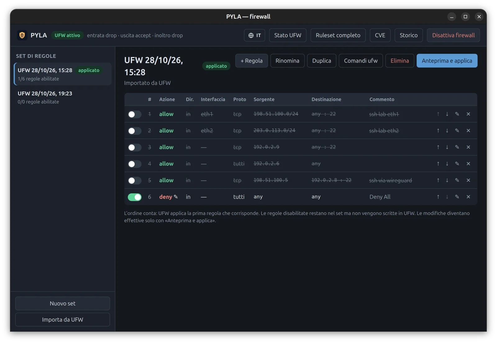
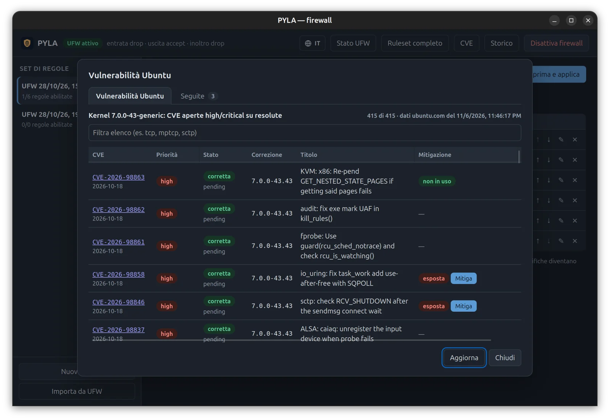
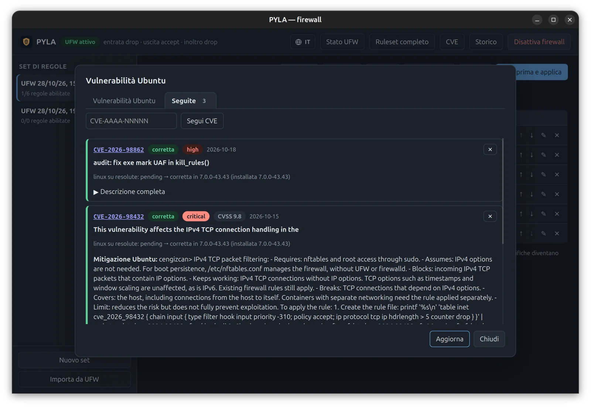
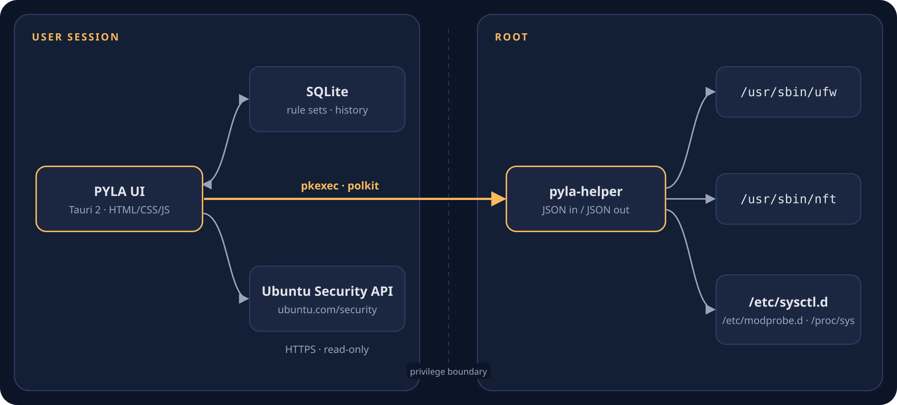

Protect Your Local Access
Un'interfaccia grafica per il firewall di Ubuntu che rende visibile la postura di rete a livello di kernel: cosa è in ascolto, cosa è esposto, cosa non avrebbe mai dovuto esserlo — in una schermata, in linguaggio semplice.
La verità del kernel, resa leggibile
ufw è potente, ma vive in un terminale di cui pochi hanno le chiavi.
PYLA non reinventa il firewall: legge e guida il motore ufw / nftables che è già nel tuo kernel.
Set di regole, non comandi sparsi
Anteprima delle differenze esatte, applicazione atomica, rollback automatico se il risultato non corrisponde.
Verifica dell'esposizione
Ogni servizio in ascolto valutato contro le regole attive nel kernel — IPv4 e IPv6 separatamente, con la regola che decide.
Ruleset nftables dal vivo
Vista in sola lettura di ciò che il kernel applica davvero: UFW, Docker, libvirt e ogni altra tabella.
Attento alle CVE
Le CVE aperte del kernel dalla Ubuntu Security API, confrontate con il kernel che stai davvero usando.
Mitigazioni reversibili
Dove un sottosistema si può spegnere in sicurezza, un clic lo blinda finché arriva la patch — e un clic lo ripristina.
Privilegi minimi
L'interfaccia non gira mai come root. Un piccolo helper polkit esegue solo comandi in lista — mai una shell.
Guardalo
Schermate reali di PYLA su Ubuntu 26.04. Gli indirizzi sono stati sostituiti con intervalli di documentazione.







Come funziona
Separazione rigorosa dei privilegi: l'unica parte che gira come root è piccola, verificabile e limitata a comandi in lista.


App PYLA
Rust + Tauri 2. Set di regole in un database SQLite locale, anteprima delle differenze, viste di esposizione e CVE.
Autorizzazione
Azione dedicata space.pyla.app.helper: tu approvi, il sistema decide.
pyla-helper
JSON in ingresso e in uscita. Percorsi assoluti, ambiente ripulito. Guida ufw, legge nft, scrive file sysctl / modprobe chiaramente marcati.
L'unica richiesta verso l'esterno è una lettura dalla Ubuntu Security API per la vista CVE. I backup delle tue regole restano in /var/lib/pyla/backups.
Installazione
Un pacchetto autosufficiente con l'app, l'helper privilegiato, la policy polkit e il lanciatore.
Pacchetto precompilato (consigliato)
# Ubuntu 26.04, amd64 curl -LO https://github.com/pyla-dev/pyla/releases/latest/download/pyla_0.2.1_amd64.deb curl -LO https://github.com/pyla-dev/pyla/releases/latest/download/pyla_0.2.1_amd64.deb.sha256 sha256sum -c pyla_0.2.1_amd64.deb.sha256 # deve stampare OK sudo apt install ./pyla_0.2.1_amd64.deb
Dai sorgenti
git clone https://github.com/pyla-dev/pyla.git cd pyla cargo test # niente root, niente rete cargo build --release sudo packaging/install-helper.sh # helper + policy polkit packaging/install-desktop.sh # lanciatore, senza sudo
Noioso di proposito
È uno strumento di sicurezza: deve essere prevedibile e verificabile.
Le Porte Calde non erano mura più alte — erano sapere esattamente dove sono le porte, e chi le attraversa.